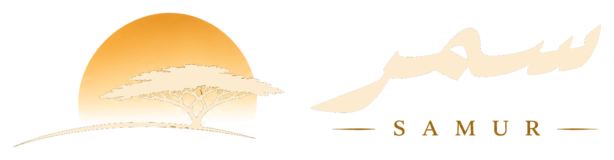
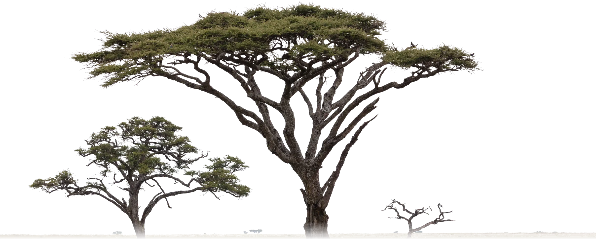
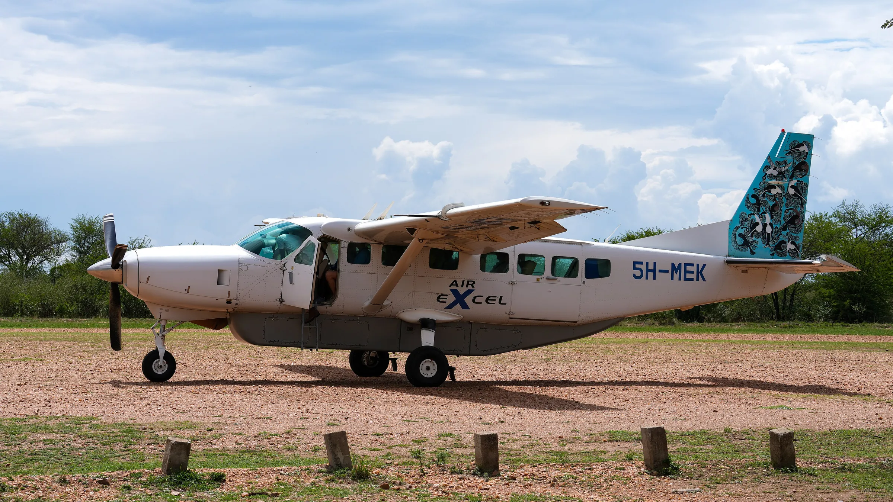
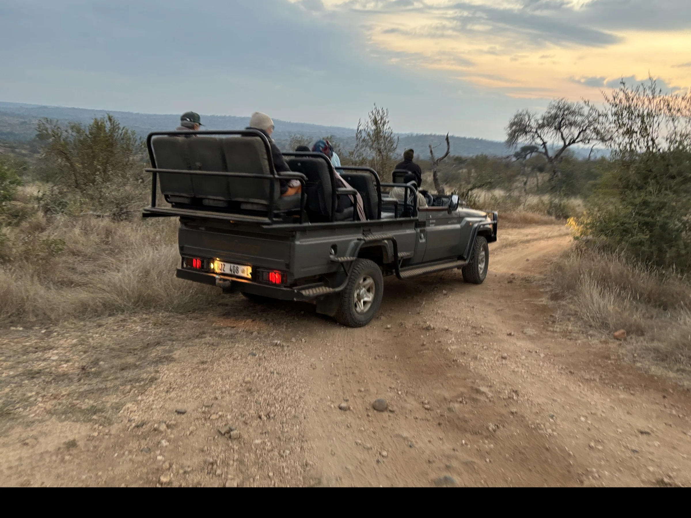
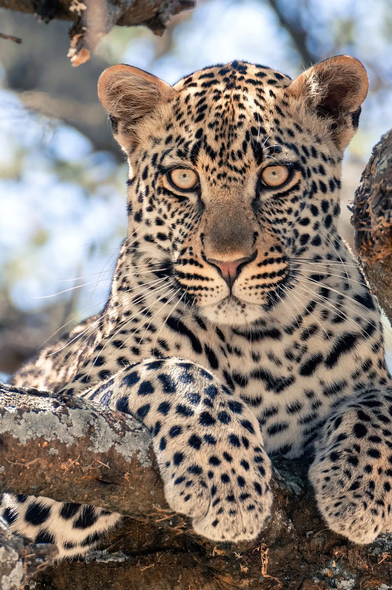

الهجرة الكبرى
مخيّمان متنقّلان يتبعان القطعان، يوم كامل في قاع فوهة نجورونجورو، ومنطاد عند الفجر فوق عبور الأنهار. التنقل بين المخيمات بالطائرة.
ابتداءً من 29,500 ر.س

من الرياض إلى السيرينجيتي في يوم واحد.
سمر هو اسم هذه الشجرة. نأخذ المسافرين السعوديين إلى السهول التي تقف عليها، ونعيدهم مع البحر في الختام.
توقف واحد في كليمنجارو، أربعون دقيقة في طائرة صغيرة، ومرشدك في انتظارك عند المهبط.
يتحدث العربية، مرخّص، ومعه سيارة سفاري مفتوحة خاصة وماء بارد في الصندوق.
هذا هو اليوم، كما ستراه بعينيك.
تابع اليوم الرياض
إلى
الرياض
إلى  السيرينجيتي
في يوم واحد
السيرينجيتي
في يوم واحد
سمر شركة سعودية للمسافر السعودي الذي يريد أفريقيا الحقيقية بلا متاعب. نطير بك من الرياض أو جدة إلى شمال تنزانيا، ونسلّمك لمرشدين يتحدثون العربية، ونُبقي الأيام بسيطة: جولات عند الفجر، غداء طويل في الظل، مطبخ حلال، مواعيد صلاة محفوظة، والبحر في الختام.

في كليمنجارو تمشي من الطائرة الكبيرة إلى طائرة سيسنا كارافان. اثنا عشر مقعداً، طيار واحد، ونافذة لكل مسافر. تنبسط السهول تحت الجناح، تعدّ قطعان النو، ويظهر المهبط خطاً أحمر في العشب. لا صالة ولا طابور: سيارتك واقفة بجانبه.

أنت تتوقف. هو لا يتوقف. الأسد يسلك الطريق الترابي لأنه أسهل من العشب، فيمرّ على بعد أمتار من الباب دون أن يرفع رأسه. المحرك مطفأ، وصوت المرشد خافت، ولا أحد يمدّ يده إلى هاتفه حتى يبتعد.

سيارات مفتوحة، ثلاثة صفوف من المقاعد، ولا نوافذ تُغلق. حين تعبر القطعان الطريق تطفئ المحرك وتنتظر، والغبار وصوت الحوافر يحيطان بك. إنها أجمل عشرين دقيقة في اليوم.

في تارانجيري فيلة أكثر من أي مكان آخر في الشمال، والعائلات تسلك الدروب نفسها التي تسلكها أنت. يتوقف المرشد بعيداً، والأم الكبيرة هي من تقرّر، والصغار يعبرون في الوسط. لا أحد يستعجل.
أسد، نمر، فهد، زرافة، حمار وحشي، فيل. في السيرينجيتي ونجورونجورو وتارانجيري تلتقي بهم جميعاً في أسبوع، وغالباً قبل الفطور. لا يُطعَمون ولا يُنادَون ولا يُلمَسون.




مخيم الخيام ليس تخييماً. الجدران من القماش، لكن الأرضية خشب، والسرير سرير حقيقي، والحمّام فيه دشّ ساخن. الفطور على الشرفة، والحمير الوحشية على العشب أمامها، والمطبخ يطهو حلالاً من أول وجبة إلى آخرها.
أسّسنا سمر لأن السفاري الذي أردناه لم يكن موجوداً لمسافري الخليج: مرشدون يتحدثون لغتنا، طعام نستطيع أكله، أيام مرتّبة حول الصلاة، ومخيمات تفهم عائلة من ثمانية أفراد. وكل ما عدا ذلك، الأسود والغبار وصمت الليل، تتكفّل به أفريقيا.
| الطيران | توقف واحد من الرياض أو جدة إلى كليمنجارو |
|---|---|
| الطائرات الصغيرة | سيسنا كارافان، أربعون دقيقة بين المخيمات |
| المرشدون | يتحدثون العربية، مرخّصون، من فريقنا |
| المطبخ | حلال بالكامل، وفطور عربي عند الطلب |
| الصلاة | مواعيدها محفوظة، والقبلة محددة في كل غرفة |
| التأشيرة | التأشيرة الإلكترونية التنزانية نرتّبها نحن |
| أفضل الشهور | من يونيو إلى أكتوبر · من يناير إلى مارس |


مستويان في كل رحلة. «الفاخر» يعني نُزُلاً على حافة الفوهة بمسبح يطلّ ستمئة متر إلى الأسفل. و«ما بعد الفاخر» يعني مخيماً خاصاً وطاهياً خاصاً وطائرة خاصة. كلاهما يحفظ مواعيد الصلاة، ويقدّم الحلال، وفيه جناح عائلي ينام فيه الأطفال على بعد بابين منك.

ساعة في الهواء مع أول الضوء، تنساب فوق قطعان لا ترفع رأسها، ثم فطور يُفرَش حيث تهبط السلّة. مشمول في رحلتين من الخمس، ويستحق كل منبّه مبكر.

صلاة الفجر، قهوة، وبطانيات دافئة في السيارة. أول ساعة من الضوء هي ساعة تحرّك القطط الكبيرة. والمساء من نصيب الفيلة، وتُصلّى المغرب في المخيم، ويصمت المولّد في العاشرة حتى لا يبقى من صوت إلا صوت السهل.

تسعون دقيقة فوق كليمنجارو وتكون على الساحل. مدينة سواحلية من الحجر المرجاني والأبواب العُمانية، ما زالت العربية تُقرأ فيها على العتبات، ومساجدها أقدم من معظم الدول. القهوة بالهيل، والسوق يفوح بالقرنفل، وستشعر بأنك في بيتك.

ثلاث ليالٍ أو أربع في ختام كل رحلة. فيلا بمسبحها الخاص، وقارب داو عند الغروب، وشاطئ ينحسر فيه المدّ كيلومتراً كاملاً، وبحر دافئ يكفي للأطفال في السابعة صباحاً.
كل رحلة تشمل الطيران والمخيمات والمرشد والتنقلات والتأشيرة الإلكترونية، بالريال للشخص الواحد. غيّر ما تشاء ونعيد حساب السعر في اليوم نفسه.
مخيّمان متنقّلان يتبعان القطعان، يوم كامل في قاع فوهة نجورونجورو، ومنطاد عند الفجر فوق عبور الأنهار. التنقل بين المخيمات بالطائرة.
ابتداءً من 29,500 ر.س
خمس ليالٍ من جولات السفاري في تارانجيري ووسط السيرينجيتي، ثم رحلة قصيرة بالطائرة إلى الساحل لأربع ليالٍ على شاطئ نونغوي. الرحلة التي تحجزها معظم العائلات أولاً.
ابتداءً من 34,900 ر.س
طائرات صغيرة تنقلك بين ثلاثة مخيمات في جنوب السيرينجيتي وشماله، فيُقضى كل صباح وكل عصر مع الحيوانات لا على الطريق. المنطاد مشمول.
ابتداءً من 38,500 ر.س
جولات قصيرة، أجنحة عائلية مع مسابح، مرشد يحوّل كل جولة إلى حكاية، وثلاثة أيام على البحر في الختام. الأطفال من سن ست سنوات؛ عائلة واحدة حتى ثمانية أفراد.
ابتداءً من 31,500 ر.س للبالغ · الأطفال من 18,900 ر.س
مخيم خاص، وطائرة خاصة، وفيلا خاصة على الجزيرة. طاهٍ يطبخ ما نشأت عليه، ولا أحد غيركم في الأفق. حتى عشرة ضيوف.
ابتداءً من 68,000 ر.س
أخبرنا متى تستطيع السفر ومن سيرافقك. نردّ خلال يوم واحد، بالعربية أو الإنجليزية، ببرنامج أولي وسعر.